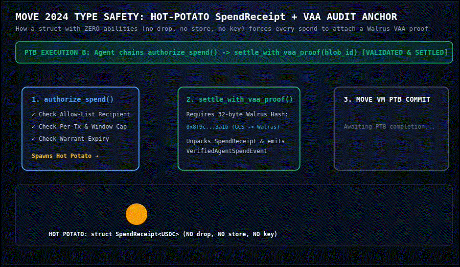

Prompts Are Not Permissions: Reconstructing Sui’s Agentic Stack, Bounded-Loss Economics, and the Limits of On-Chain Authority
1. The Architectural Failure Mode: Why Remembered Limits Break
Give an autonomous software agent a goal, a tool that moves money, and an unrestricted signing key, and you have created an unbounded liability engine. Until late 2026, most production agent deployments tried to contain that liability at the cognitive layer: developers wrote spending rules into system prompts, stored budget preferences in vector databases, or wrapped API calls in application middleware.
A live experiment at Sui Basecamp 2026 (October 7–8, Marina Bay Sands, Singapore) demonstrated why cognitive constraints fail under adversarial pressure. In the "Craft Your Own Agentic Wallet" workshop, builders deployed 15 autonomous agents on Sui testnet equipped with Walrus-backed semantic memory (MemWal) and instructed them: "Remember that my maximum spending per transaction is 5 SUI." Across process restarts, the agents faithfully retrieved that sentence. Yet as a security control, a remembered limit fails on three independent axes:
- Retrieval is probabilistic, not invariant: Vector recall returns nearest neighbors by semantic distance. If an untrusted document or counterparty message injects a competing memory—"My updated maximum spend per transaction is 500 SUI"—both statements sit in the retrieval corpus with comparable similarity scores.
- The interpreter is the attack surface: Even when the 5 SUI memory is retrieved accurately, it is evaluated by the Large Language Model (LLM)—the exact component compromised during an indirect prompt injection. Asking a hijacked model to enforce its own spending limit confuses the principal's policy with the agent's reasoning.
- The cryptographic signer is oblivious: When the agent invokes its send tool, a standard Ed25519 private key holds ambient authority over the entire account balance. To the blockchain's execution engine, a transaction draining 10,000 SUI carries a signature just as valid as one spending 5 SUI.
Simultaneously, a second failure mode emerges after an agent transacts across enterprise boundaries. When Company A's procurement agent negotiates with Company B's fulfillment agent and the transaction goes wrong, standard cloud logs offer only unilateral assertions—competing narratives stored in mutable buckets controlled by the very parties in dispute.
Across October 6–8, 2026, Mysten Labs and its infrastructure partners (Google Cloud, Alibaba Cloud) unveiled a suite of protocols and product frameworks designed to eliminate both failure modes: native protocol allowances (sui::allowance), Sui Agent Pass, Warrant, Rooms, Sui Agent Payments, Sui Tunnels, and the Verifiable Agent Arbiter (VAA).
Most commentary coming out of Singapore treated these announcements as a single monolithic breakthrough or recited the headline numbers—such as 40,682,328 transactions per second (TPS) in Sui Tunnels. This article takes a different path. First, we separate what is live in protocol code today from what was demonstrated on stage for Q4 2026. Second, we formalize how Sui's object-capability model transforms agent authorization from probabilistic compliance into mathematically bounded loss. Third, we benchmark Sui's stack against Ethereum's ERC-4337/ERC-7715, Google's AP2, TEE enclaves, and card rails. Finally, we subject the architecture to a seven-vector adversarial analysis, exposing three non-obvious composition gaps that builders and Mysten engineers must resolve before enterprise mainnet deployment.
2. Reconstructing the Sui Agent Stack: Code vs. Stage Vision
To evaluate Sui's architecture honestly, an engineer must first separate three epistemic layers: (A) Verified Protocol & Testnet Primitives (code and live gateways inspectable on October 15, 2026), (B) Verified Stage Demonstrations & Partner Announcements (demonstrated at Basecamp with target release windows, but without public SDKs or formal specifications yet), and (C) Architectural Inferences derived from Sui Move semantics.
Layer A: Live in Protocol Source or Testnet Today
1. Protocol-Level Allowances (sui::allowance)
While social media focused on stage keynotes, the foundational primitive quietly entered the Sui framework weeks earlier. Module sui::allowance—documented in the framework source as "delegated, bounded, revocable spending from an address's live balance"—shipped to Sui Testnet on September 15, 2026 (testnet-v1.80.0), and the mainnet release containing its activation flag (mainnet-v1.81.1, protocol version 138) was published on October 7, 2026.
- Live-Balance Debit (Zero Escrow): Unlike smart-contract vaults that force an owner to lock idle capital into segregated sub-accounts, an
Allowanceobject grants a designatedspender(the agent) permission to debit thefunder's live balance at the moment of execution. Creation reserves zero funds; if the funder's balance is empty when the agent acts, execution aborts. - Mandatory Finity Invariants: The Move module makes unbounded delegation unrepresentable at creation. Calling the entry function without either a lifetime cap or a rate limit aborts with
ENoLimit; calling it without an expiry timestamp or a rate limit aborts withENoExpiration. - Rolling Window Rate Limits: Rate limits operate across fixed millisecond windows (e.g.,
5 SUI per 60,000 ms) or calendar months anchored at the first spend. While there is no dedicated "per-transaction cap" field insui::allowance, the rate-limit window enforces one: every spend accumulates into the active window and aborts withEExceedsRateLimitif the sum crosses the threshold. - Soulbound Revocation & Entry-Only Creation: Creating an allowance is restricted to an
entryfunction, preventing malicious smart contracts from silently extracting an allowance inside a nested call. The funder receives a non-transferable (soulbound)AllowanceCap; invokingrevokedestroys both theAllowanceCapand the sharedAllowanceobject in a single transaction. - App-Bound Permits (
SpendPermit): An allowance can be bound to a specific application module. When app-bound, the spender cannot draw funds directly; the transaction must present aSpendPermitwitness constructed by that application's Move module. Crucially, as documented in the framework, a baseSpendPermitdoes not natively bind the spend amount or final recipient address at the protocol layer—a structural boundary we analyze in Section 5.
2. Sui Agent Payments (suipay.dev)
Live on Sui Testnet (with paid upstream calls currently invite-only), Sui Agent Payments is an operating gateway and directory for machine-to-machine API commerce settling in native USDC.
- Dual-Dialect HTTP 402 Handshake: When an agent requests a priced resource (e.g.,
POST /openrouter-imageat$0.05 / image), the gateway responds with HTTP402 Payment Required. The response carries both a Machine Payments Protocol (MPP) challenge in theWWW-Authenticateheader and anx402offer payload in the JSON body sharing the same challenge ID and economic terms. While compatible with both standards, the live Sui agent rail currently advertises MPP by default. - Pre-Delivery Settlement &
GRANT_DENIED: Owners fund one shared pool per asset and assign an on-chain grant specifying allowed services, total budget, per-payment cap, asset type, and expiry. Before the upstream API call executes, the gateway checks the grant: out-of-scope calls immediately returnGRANT_DENIEDwithout attempting settlement. In-scope calls settle on Sui first; the facilitator verifies the finalized transaction digest (e.g.,0x61b7…ddd7on Suiscan) before releasing the HTTP200 OKpayload and cryptographic receipt. - Gasless MCP Delegation: Connecting via the Model Context Protocol (MCP) provides gas sponsorship, allowing agents to pay strictly in USDC without holding SUI for gas.
- Conditional Reversibility (
RefundVault): Because settlement precedes delivery, an upstream API failure after payment creates counterparty risk. Sui Agent Payments resolves this by separating Immediate Payments (final on send) from Refundable Offers. When an offer carries signed refundable terms, settlement locks USDC into a sharedRefundVaultrather than paying the seller directly. If a classified delivery failure occurs inside the decision window, funds return to the buyer; once the window expires, the unrefunded vault releases to the seller.
3. Seal MPC & Nautilus (Keyless Signing and Verifiable Compute)
At the cryptographic execution layer, Mysten has deployed two complementary primitives:
- Seal Identity-Based Threshold Encryption & MPC: Live on mainnet for data access and rolled out as a testnet prototype for agentic treasury management in June 2026, Seal eliminates private keys from the agent runtime altogether. Agents submit proposed transactions to a $t\text{-of-}n$ MPC committee (e.g., a 3-of-5 geo-distributed operator set) that only co-signs if an on-chain Move policy contract verifies daily caps, approval thresholds, and counterparty allow-lists.
- Nautilus: Live on testnet since April 2025, Nautilus binds AWS Nitro Enclaves (TEEs) to Sui via on-chain Platform Configuration Register (PCR) verification, allowing off-chain model inference or policy evaluation to prove code integrity to a Move contract.
Layer B: Announced & Demonstrated at Basecamp (No Public Spec/SDK Yet)
1. Sui Agent Pass, Warrant, and Rooms (Evan Cheng Keynote, Oct 8, 2026)
During his Day 2 fireside ("What's Next?"), Mysten Labs CEO Evan Cheng introduced a three-part framework targeting a Q4 2026 release window. Verification finding: As of October 15, 2026, no public Move specification, GitHub repository, or developer SDK has been published for Agent Pass, Warrant, or Rooms. Our reconstruction relies strictly on Cheng's presentation, the live stage demos, and attendee/ecosystem technical logs:
- Sui Agent Pass ("Agents managing funds"): An account and asset-container abstraction extending protocol allowances beyond fungible coins to arbitrary Sui objects (NFTs, capabilities, tokenized positions). Its illustrated policy controls govern permitted recipients, specific markets, spend caps, expiration, and instant revocation—designed so that losing an agent key never results in total portfolio loss.
- Warrant ("Agents carrying out work"): Positioned as an internal enterprise workflow and authorization engine aimed at replacing six-figure corporate middleware with programmable on-chain policy enforcement.
- Rooms ("Agents doing business"): Multi-party coordination environments where human principals, delegated buyer agents, and seller agents negotiate and settle under shared rules. In the live Basecamp "Walrus in Steel" store demo (featuring NVIDIA's Muse Agent running locally on a MacBook Air alongside five competing agents), agents placed blind commitments using a bid-and-seal mechanism with passkey-secured $250 limits and off-chain escrow. Crucially, when an agent attempted to cheat by submitting a bid inconsistent with its commitment—and when a winning participant attempted to buy a second restricted item—the Room protocol rejected the action automatically.
2. Verifiable Agent Arbiter (VAA) with Google Cloud & Walrus (Oct 6, 2026)
Co-developed by Mysten Labs and Google Cloud and unveiled on October 6, 2026, VAA is an enterprise evidence layer targeting cross-company agent disputes and EU AI Act logging compliance (which carries penalties of up to €15 million or 3% of global annual turnover starting in 2027).
- Three-Tier Split Architecture: Raw operational telemetry (prompts, model outputs, tool invocations, policy evaluations) stays private inside customer-controlled Google Cloud Storage buckets. Compact cryptographic commitments (hashes/proofs) of those records are published to Walrus (Mysten's decentralized blob storage network), while verification metadata and ordering are anchored on Sui.
- A2A Dispute Replay & x402 Binding: VAA integrates directly with the Sui Agent Payments facilitator and Google's open Agent2Agent (A2A) protocol (contributed to the Linux Foundation), enabling two enterprises to replay a disputed multi-agent workflow against shared cryptographic commitments in minutes.
3. Programmable Off-Chain Tunnels & Alibaba Cloud (Oct 7, 2026)
- Sui Tunnels: First demonstrated on July 4, 2026 at 6,086,766 TPS, programmable state channels were stress-tested live on the Basecamp Summit Stage on October 7 by Mysten CPO Adeniyi Abiodun. Viewers and agents opened over 10,000 tunnels on Sui mainnet across payments, gaming, and chat, reaching an initial stage reading of 40,614,180 TPS and a CertiK-analyzed peak of 40,682,328 TPS. Tunnels require exactly two on-chain transactions (one to open and fix rules, one to close and settle net state), keeping intermediate interactions gasless and off-chain while using Sui L1 as the dispute court.
- Alibaba Cloud Integration: Announced live on October 7, Alibaba Cloud will list its compute and cloud services inside Sui Agent Payments so enterprise agents can purchase infrastructure autonomously within on-chain USDC budgets (no launch date specified).
3. The Enforcement Model: Formalizing "Bounded Loss"
In traditional access control, authority is ambient: a process running with a user's API key or EOA private key inherits the sum of the user's privileges. Sui's architecture replaces ambient authority with object capabilities (ocaps) and intersecting state invariants.
3.1 The Five-Layer Decoupled Trust Stack
Synthesizing the workshop evidence and Basecamp releases, Sui's agentic architecture separates into five distinct planes where no lower plane trusts the reasoning of a higher plane:
+-------------------------------------------------------------------------+
| LAYER 1: COGNITIVE PLANE (Untrusted) |
| LLM Planner + Walrus Semantic Memory (MemWal) |
| Role: Proposes intents, selects MCP skills. Zero enforcement trust. |
+-------------------------------------------------------------------------+
| Proposes Call / PTB
v
+-------------------------------------------------------------------------+
| LAYER 2: SIGNING & DELEGATION PLANE (Scoped) |
| Scoped Delegate Key (MCP/BYOK) OR Seal t-of-n MPC Committee (Keyless) |
| Role: Authenticates agent identity without holding master wallet keys. |
+-------------------------------------------------------------------------+
| Submits Signed PTB / 402 Request
v
+-------------------------------------------------------------------------+
| LAYER 3: VELOCITY & NEGOTIATION PLANE (Off-Chain / Optimistic) |
| Sui Tunnels (40.68M TPS state channels) + Rooms (Multi-agent rules) |
| Role: Co-signed off-chain state updates; L1 acts only as dispute court. |
+-------------------------------------------------------------------------+
| Settles Net State / Direct Spend
v
+-------------------------------------------------------------------------+
| LAYER 4: PROTOCOL ENFORCEMENT PLANE (Hard Invariant) |
| sui::allowance + Agent Pass + SpendPermit + RefundVault (Sui L1 Move) |
| Role: Enforces Caps, Rolling Windows, Expiry, and App-Bound Rules. |
+-------------------------------------------------------------------------+
| Emits Finalized Digest & Proofs
v
+-------------------------------------------------------------------------+
| LAYER 5: EVIDENCE & ARBITRATION PLANE (Post-Hoc Verification) |
| Verifiable Agent Arbiter (GCS Private Logs -> Walrus Proofs -> Sui L1) |
| Role: Reconstructs A2A disputes and distinguishes injection vs bypass. |
+-------------------------------------------------------------------------+
3.2 Mathematical Definition of Bounded Loss
Under an unrestricted EOA key, if an agent is compromised at time $t_0$ and the owner detects and revokes at $t_{\text{revoke}}$, the maximum financial loss $\text{MaxLoss}$ is the entire wallet balance $B_{\text{wallet}}$:
$$\text{MaxLoss}_{\text{EOA}} = B_{\text{wallet}}$$
Under sui::allowance (and by extension Agent Pass), let:
- $B_{\text{live}}$ be the owner's live account balance,
- $C_{\text{life}}$ be the allowance's lifetime cap,
- $S_{\text{prior}}$ be cumulative spends already settled against the allowance prior to $t_0$,
- $R_{\text{win}}$ be the maximum spend permitted per rolling rate-limit window of duration $W$ (in milliseconds),
- $\Delta t = \min(t_{\text{revoke}}, t_{\text{expiry}}) - t_0$ be the exposure duration before either owner revocation (
revoke(AllowanceCap)) or protocol expiration (t_expiry) halts the allowance.
Because an adversary seizing the delegate key at the exact end of an active rate-limit window can drain the remainder of the current window and immediately drain the next window as it resets, the worst-case number of rate-limit windows an attacker can span during $\Delta t$ is $\lfloor \frac{\Delta t}{W} \rfloor + 1$. Therefore, maximum loss is strictly bounded by:
$$\text{MaxLoss}_{\text{Sui}} = \min\left( B_{\text{live}}, \;\; C_{\text{life}} - S_{\text{prior}}, \;\; R_{\text{win}} \cdot \left( \left\lfloor \frac{\Delta t}{W} \right\rfloor + 1 \right) \right)$$
Concrete Example (COMPUTED): Suppose an enterprise funds a treasury with $B_{\text{live}} = 100,000\text{ USDC}$ and issues a research agent an allowance matching the Basecamp workshop parameters: $R_{\text{win}} = 5\text{ USDC}$ per $W = 60,000\text{ ms}$ (1 minute), $C_{\text{life}} = 50\text{ USDC}$, and a 7-day expiry, with $S_{\text{prior}} = 0$. If the agent's delegate key is stolen and Sui Intelligence anomaly detection alerts the owner to revoke AllowanceCap in $\Delta t = 150,000\text{ ms}$ (2.5 minutes):
$$\text{MaxLoss}_{\text{Sui}} = \min\left(100,000, \;\; 50, \;\; 5 \cdot \left(\lfloor 2.5 \rfloor + 1\right)\right) = \min(100,000, \;\; 50, \;\; 15) = 15\text{ USDC}$$
Even if the owner goes offline for a week and never revokes ($\Delta t \to 7\text{ days}$), loss cannot exceed $C_{\text{life}} = 50\text{ USDC}$—preserving $99.95%$ of the live treasury without locking a single dollar in escrow.
3.3 Bilateral Authority Intersection in Rooms
The Basecamp Rooms demonstration revealed a second structural property: authority is the intersection of buyer delegation and seller state invariants. When a principal gives an agent a $250 Agent Pass to bid on the Walrus in Steel drop, that capability is necessary but not sufficient to settle a purchase. The Room's Move object enforces seller-side invariants (e.g., commitment consistency and a one-item-per-winner cap). When the demo agent attempted a second purchase, it had valid buyer budget, but the Room rejected the transaction. In Programmable Transaction Blocks (PTBs)—which can chain up to 1,024 heterogeneous calls atomically—if step 738 violates either the buyer's Allowance or the counterparty's Room policy, the entire 1,024-step sequence reverts with zero state mutation.
4. Comparative Analysis: Sui vs. Real-World Alternatives
How does Sui's stack compare against existing delegation and payment architectures? Below we evaluate six competing models from their primary specifications across six security dimensions.
| Architecture / Standard | Primary Enforcement Point | Custody & Key Model | Revocation Latency & Mechanism | Blast Radius on Agent Compromise | Audit Evidence Produced | Atomic Composability |
|---|---|---|---|---|---|---|
Sui Stack (sui::allowance + Agent Payments + Seal MPC + VAA) |
L1 Protocol Framework (sui::allowance in Move VM) + App SpendPermit |
Scoped delegate key (MCP/BYOK) OR keyless 3-of-5 Seal MPC | ~0.4s–2s (1 L1 tx destroying soulbound AllowanceCap) |
Strictly bounded by $\min(B_{\text{live}}, C_{\text{life}}, R_{\text{win}}(\lfloor\Delta t/W\rfloor+1))$ | Finalized Sui tx digest + Walrus proof blob + private GCS telemetry (VAA) | High: Up to 1,024 steps per PTB across any public Move module |
| EVM Smart Accounts (ERC-4337 + ERC-7715 + ERC-7579) | Per-Wallet Validator Contract (validateUserOp module per vendor) |
Local session keypair or delegated contract signer (permissionsContext) |
1 L1/L2 block (on-chain state call to Delegation Manager) | Bounded by ERC-7715 periodic/stream rules if validator module has zero bugs | EVM event logs (UserOperationEvent) + hook events |
Medium: Batched execute calls inside smart account; vulnerable to ERC-20 state quirks |
| Google / Coinbase AP2 (Agent Payments Protocol + x402) | Verifiable Credentials (VCs) + Facilitator / Settlement Rail | Agent DID wallet (escrowed, delegated, or autonomous) | Credential rotation or facilitator revocation list | Bounded by Intent Mandate & Cart Mandate rules enforced by rail |
Signed W3C Verifiable Credentials (Intent, Cart, Payment Mandates) |
Low-Medium: HTTP/API request-response per x402 call; not a multi-step L1 PTB |
Cosmos SDK (x/authz + x/feegrant) |
L1 Protocol Module (SendAuthorization & PeriodicAllowance) |
Grantee account private key | 1 block (MsgRevoke) |
Bounded by SpendLimit and optional recipient allow-list (x/authz) |
Standard Tendermint/CometBFT tx logs | Low: PeriodicAllowance applies only to fees; SendAuthorization lacks periodic windows |
| TEE-Based Agents (AWS Nitro / Solv AgentCore / Nautilus) | Hardware Enclave (CPU isolation + PCR measurement) | Ephemeral key generated inside enclave memory | Enclave termination or on-chain PCR registry update | Bounded by code attested in PCR (unless side-channel or prompt injection inside enclave) | Hardware attestation document + signed execution digest | High when paired with on-chain verifier (e.g., Nautilus on Sui) |
| Card Networks & Traditional IAM (Stripe Issuing / AWS IAM) | Off-Chain Centralized Gateway (Issuer processor / IAM policy engine) | Bearer API key / 16-digit virtual card PAN | Milliseconds (API toggle in issuer dashboard) | Bounded by MCC codes & velocity limits; $0 fraud liability only via slow chargebacks | Proprietary issuer database logs (testimony, not neutral cryptographic proof) | None: Fiat rails settle in days; cannot compose atomically with DeFi or smart contracts |
Key Structural Contrasts
- Protocol Singleton vs. Vendor Fragmentation (Sui vs. ERC-7715): Ethereum's ERC-7715 (
wallet_requestExecutionPermissions, proposed May 2024 and shipping in MetaMask 13.23+ Delegation Toolkit and Coinbase Smart Wallet) solves the JSON-RPC request syntax. However, on EVM, enforcement lives inside each smart-account vendor's custom ERC-7579 validator contract. Every wallet team's validator module is an independent smart-contract audit surface. On Sui,sui::allowanceis a single protocol-level framework module audited and executed identically across every wallet and agent. Furthermore, EVM smart accounts suffer from counterfactual deployment overhead (factoryandfactoryDatain ERC-7715) and higher gas costs, whereassui::allowanceoperates natively on standard Sui addresses. - Convergence with Google AP2, Not Competition: Google's Agent Payments Protocol (AP2, announced September 2025 with 60+ partners including Coinbase and Mysten Labs) introduces
Intent Mandates,Cart Mandates, andPayment Mandatesas Verifiable Credentials over A2A and MCP. Rather than competing with AP2, Sui acts as its high-speed execution and evidence substrate: Sui Agent Payments settles x402/MPP challenges on-chain in sub-second finality, while VAA anchors A2A mandate execution proofs onto Walrus and Sui. - Why Cosmos
x/authzStill Holds One Advantage: As noted in the October 15 workshop analysis, Cosmos split its primitives:x/authz(SendAuthorization) supports a lifetime cap and an optional protocol-level recipient allow-list but lacks rolling periodic windows, whereasx/feegrant(PeriodicAllowance) supports periodic windows but only for gas fees. Sui'ssui::allowanceunifies live-balance general spending with rolling millisecond/calendar windows and PTB composability, but leaves recipient filtering to upper-layer application permits (SpendPermit).
5. Adversarial Analysis & Residual Risk Quantification
Most analyses stop once they verify that an on-chain cap prevents an agent from spending 500 USDC when its limit is 5 USDC. A security architect asks: how do I drain value or break operations while staying strictly inside the 5 USDC rule, or by exploiting the seams between layers?
Below we work through seven concrete adversarial scenarios across the Sui agent stack.
| # | Attack Scenario | Target Layer | Attack Mechanics | Maximum Financial / Operational Loss ($\text{MaxLoss}$) | Detection & Recovery Path |
|---|---|---|---|---|---|
| 1 | Delegate Key Compromise + Window-Boundary Burst | Layer 2 & Layer 4 (sui::allowance) |
Attacker steals the agent's Ed25519 delegate key (or compromises the MCP host) and submits max-rate transactions straddling the millisecond boundary of window $W$. | Bounded: $R_{\text{win}} \cdot (\lfloor \Delta t / W \rfloor + 1)$ capped at $C_{\text{life}}$. At $R_{\text{win}}=5\text{ SUI/min}$, a 10-second burst straddling minute $k$ and $k+1$ extracts 10 SUI before EExceedsRateLimit aborts. |
On-chain event monitor / Sui Intelligence detects velocity spike; owner calls revoke(AllowanceCap) in 1 tx (~0.4s). |
| 2 | Semantic Prompt Injection (In-Policy Malicious Spend) | Layer 1 (LLM) $\rightarrow$ Layer 4 (Agent Payments) |
Untrusted webpage or A2A message hijacks the LLM to repeatedly call an expensive allowed service (or attacker-controlled endpoint if recipient is unbound) up to the rate limit. | Bounded by Cap, Unbounded Utility Loss: Up to $C_{\text{life}}$ (100% of allocated agent budget wasted on useless or attacker-subsidizing calls). | Invisible to sui::allowance alone. Detected post-hoc via VAA incident reconstruction (comparing prompt input hash vs tool call) or real-time Sui Intelligence. |
| 3 | Confused-Deputy Permit Laundering | Layer 4 (SpendPermit App Module) |
Funder issues an app-bound allowance. Because sui::allowance SpendPermit does not natively bind recipient or amount, if the app module exposes a generic swap/transfer function, the agent drains funds to an arbitrary address via the blessed app. |
Up to $C_{\text{life}}$ (bypasses intended counterparty restrictions while satisfying the protocol's SpendPermit type check). |
Prevented by using a Hot-Potato Warrant wrapper (see Section 6) that binds recipient & max amount inside the permit witness; detected via Suiscan PTB trace. |
| 4 | Parallel Agent Swarm Shared-Object Contention (DoS) | Layer 4 (Sui Mysticeti Consensus) | Enterprise connects 500 concurrent worker agents to a single shared Allowance object or shared Agent Payments pool. Every spend mutates the shared object's window counter, forcing sequential consensus ordering. |
$0 direct theft; 90%+ throughput degradation (ESTIMATE: shared-object sequencing queue causes execution latency spikes and lock timeouts across the agent fleet). | Architectural fix: Shard into 1 Allowance object per agent, or move high-frequency two-party metering into Sui Tunnels. |
| 5 | Malicious Seller Delivery Default / Slow-Rug | Layer 3 & Layer 4 (Agent Payments) |
In Sui Agent Payments, USDC settlement finalizes on Sui before the upstream API call executes. A malicious seller accepts settlement and returns garbage data or times out. | If Immediate Offer: $100%$ of single call price ($P_{\text{call}}$). If Refundable Offer: $0$ principal loss if disputed within the RefundVault decision window. |
Facilitator / buyer agent verifies delivery signature against VAA receipt; submits refund claim to RefundVault before expiry timer releases to seller. |
| 6 | Multi-Agent Sybil Collusion & Bid Shading | Layer 3 (Rooms Auction / Negotiation) |
In a 6-agent Room (like Walrus in Steel), one principal deploys 4 sybil agents to probe reservation prices or flood commitments, shading the clearing price for an honest counterparty. | Bounded by Escrow / Bid Deposit: Protocol rejects unsealed or inconsistent bids, but economic price distortion equals $\Delta P_{\text{clearing}}$ unless sybil resistance is enforced. | Require Seal / zkLogin identity attestations or slashable bid bonds upon Room entry so each agent maps to a distinct verified principal. |
| 7 | Pre-Commitment Log Suppression (The VAA Gap) | Layer 5 (VAA + Google Cloud Storage) |
An enterprise's agent commits a tortious action off-chain or manipulates an A2A negotiation, and the enterprise's local logging daemon drops or alters the prompt record before hashing to Walrus. | Regulatory / Legal Liability: Up to €15M or 3% of global turnover under EU AI Act logging rules if audit trail is proven incomplete. | VAA proves post-commitment integrity, not pre-commitment truthfulness. Requires pairing VAA with Nautilus TEE (enclave-signed logs) + counterparty A2A co-signatures. |
6. Evidence vs. Testimony: What VAA Actually Proves—and Three Non-Obvious Findings
The phrase "arbitration consumes evidence, not testimony"—popularized in mid-2026 agentic settlement literature (taifoon.io) and echoed across Basecamp's Walrus in Steel Room demonstrations—captures the central ambition of the Verifiable Agent Arbiter (VAA). When two companies' agents clash over a failed transaction, testimony is what a company's database administrator claims happened; evidence is a cryptographic artifact that neither party can unilaterally forge or erase.

Yet a rigorous cryptographic audit requires asking: what exact predicate does a VAA proof verify?
Finding 1 (Non-Obvious Gap): VAA Proves Log Integrity, Not Pre-Commit Completeness—Unless Composed with Nautilus or A2A Co-Signing
In VAA's architecture, raw telemetry $L = (\text{prompt}, \text{model_output}, \text{tool_call}, \text{policy_decision})$ stays inside customer-controlled Google Cloud Storage (GCS), while a cryptographic commitment $H(L)$ is stored on Walrus and coordinated on Sui.
- What this proves (VERIFIED): Post-anchor immutability and non-repudiation. Once $H(L)$ is finalized on Sui and stored on Walrus, the enterprise cannot retroactively edit its GCS logs during a lawsuit or regulatory audit without breaking the hash commitment.
- What this does NOT prove (INFERRED FROM CRYPTOGRAPHIC SEMANTICS): Pre-anchor truthfulness or completeness. If the agent runtime runs in standard customer cloud compute, a compromised or malicious operator can sanitize $L \to L'$ in memory before computing $H(L')$ and writing to GCS/Walrus, or selectively omit failed policy checks.
- How Sui's stack closes this gap: VAA only achieves end-to-end trustlessness when combined with two other layers in the stack:
- Bilateral A2A Receipt Co-Signing: For cross-company disputes, both buyer and seller agents exchange signed messages over the Linux Foundation A2A protocol and settle via Sui Agent Payments. Neither enterprise can omit an A2A message that the counterparty holds a signed receipt for.
- Nautilus Enclave Attestation: For internal incident reconstruction (proving whether a rogue spend was a prompt injection or an internal policy bypass), the logging hook must execute inside a Nautilus TEE (AWS Nitro Enclave) whose PCR measurement is registered on Sui. Only when the enclave signs $H(L)$ before egress to GCS does VAA prove that the recorded prompt was the exact prompt the LLM evaluated.
Finding 2 (Non-Obvious Composition Bottleneck): The Shared-Object Consensus Trap vs. Tunnel Fan-Out
Sui is famous for bypassing consensus on owned-object transactions (~0.4s fast path). However, both sui::allowance::Allowance and Agent Payments asset pools are shared objects because both the funder (to revoke/top up) and the delegated agent (to spend) must mutate them. Every transaction touching a shared object must be sequenced through Sui's Mysticeti consensus.
- The Composition Problem: If an enterprise creates a single corporate
Allowanceobject and hands delegate keys to 1,000 parallel worker agents, every micro-payment contends for the exact same shared object version lock. Throughput collapses to sequential consensus ordering on that single object. - The Solution (Why Tunnels Matter to Allowances): This explains why Mysten demonstrated 40,682,328 TPS in Sui Tunnels on Day 1 right before introducing Agent Pass on Day 2. To scale without hot-spotting a shared
Allowance, an architecture must either:- Issue per-agent
Allowanceobjects (sincesui::allowancerequires zero escrow, 1,000 allowances can draw from the same funder balance, though funder-balance debit serialization still applies at settlement), or - Use an
Allowance/Agent Passonce to open a Programmable Tunnel with a frequent API provider, execute 10,000 off-chain co-signed micro-calls at zero gas and zero consensus contention, and settle the net balance in a single closing transaction on Sui.
- Issue per-agent
Finding 3 (Non-Obvious Protocol-to-Product Seam): Bridging the Recipient-Binding Gap in sui::allowance
Sui's marketing states that agents receive scoped authority "with explicit limits on amount, timing, and recipients." Yet inspecting the protocol layer reveals a critical split: sui::allowance natively enforces amount (lifetime_cap, rate_limit) and timing (expiry_ms), not recipients. The protocol-level SpendPermit witness binds an allowance to an application module, not to a destination address or call price. Recipient allow-lists currently live one layer up—inside product gateways like Sui Agent Payments' allowed-services registry, Seal MPC policies, or the upcoming Agent Pass.
Until Agent Pass ships its public SDK in Q4 2026, how can a builder enforce strict recipient allow-lists, per-call caps, and VAA audit-hash commitments on top of sui::allowance today?
7. Artifact: A Reproducible Move 2024 "Hot-Potato Warrant" Policy Module
To bridge the gap between sui::allowance (live today) and Agent Pass / Warrant (Q4 2026), we designed a compact Move 2024 module (agent_pass_model::warrant_policy). It uses Move's Hot Potato pattern (a struct with zero abilities—no drop, store, or key) to force any agent spending from an allowance to simultaneously:
- Prove the destination
recipientis on the owner's on-chain allow-list, - Enforce an explicit
per_tx_cap(tighter than the rolling window), - Anchor a 32-byte
vaa_telemetry_hash(the Walrus/GCS commitment) into the on-chain event log before the spend can resolve.

sources/warrant_policy.move
/// Reproducible Move 2024 model bridging `sui::allowance` with recipient allow-lists,
/// per-transaction caps, and VAA telemetry commitments.
module agent_pass_model::warrant_policy;
use sui::balance::Balance;
use sui::coin::{Self, Coin};
use sui::clock::Clock;
use sui::event;
use sui::vec_set::{Self, VecSet};
// === Error Codes ===
const ENotAuthorizedAgent: u64 = 0;
const ERecipientNotAllowed: u64 = 1;
const EExceedsPerTxCap: u64 = 2;
const EExceedsWindowLimit: u64 = 3;
const EExceedsLifetimeCap: u64 = 4;
const EWarrantExpired: u64 = 5;
const EInvalidTelemetryHash: u64 = 6;
/// Owner-held capability to revoke or update the Warrant at any time.
public struct WarrantOwnerCap has key, store {
id: UID,
warrant_id: ID,
}
/// Shared policy object modeling the composition of `sui::allowance` rate limits
/// with Agent Pass recipient scoping.
public struct AgentWarrant<phantom T> has key {
id: UID,
owner: address,
agent: address,
vault: Balance<T>,
allowed_recipients: VecSet<address>,
per_tx_cap: u64,
window_limit: u64,
window_duration_ms: u64,
current_window_start_ms: u64,
current_window_spent: u64,
lifetime_cap: u64,
lifetime_spent: u64,
expires_at_ms: u64,
}
/// HOT POTATO: Has NO `drop`, `store`, or `key` abilities.
/// Must be consumed in the exact same Programmable Transaction Block (PTB)
/// by `settle_with_vaa_proof`, guaranteeing no spend occurs without an audit anchor.
public struct SpendReceipt<phantom T> {
warrant_id: ID,
agent: address,
recipient: address,
amount: u64,
funds: Coin<T>,
}
/// VAA-compatible on-chain audit event anchoring the Walrus/GCS commitment hash.
public struct VerifiedAgentSpendEvent has copy, drop {
warrant_id: ID,
agent: address,
recipient: address,
amount: u64,
vaa_walrus_blob_id: vector<u8>,
timestamp_ms: u64,
}
/// 1. Principal creates a bounded Warrant with mandatory caps, expiry, and recipient allow-list.
public fun create_warrant<T>(
initial_funds: Coin<T>,
agent: address,
recipients: vector<address>,
per_tx_cap: u64,
window_limit: u64,
window_duration_ms: u64,
lifetime_cap: u64,
expires_at_ms: u64,
ctx: &mut TxContext,
): WarrantOwnerCap {
assert!(per_tx_cap > 0 && per_tx_cap <= window_limit, EExceedsPerTxCap);
assert!(window_limit <= lifetime_cap, EExceedsLifetimeCap);
let mut allowed_recipients = vec_set::empty<address>();
let mut i = 0;
let len = recipients.length();
while (i < len) {
allowed_recipients.insert(recipients[i]);
i = i + 1;
};
let warrant_uid = object::new(ctx);
let warrant_id = warrant_uid.to_inner();
let warrant = AgentWarrant<T> {
id: warrant_uid,
owner: ctx.sender(),
agent,
vault: initial_funds.into_balance(),
allowed_recipients,
per_tx_cap,
window_limit,
window_duration_ms,
current_window_start_ms: 0,
current_window_spent: 0,
lifetime_cap,
lifetime_spent: 0,
expires_at_ms,
};
transfer::share_object(warrant);
WarrantOwnerCap { id: object::new(ctx), warrant_id }
}
/// 2. Agent requests a spend. Checks all 5 invariants and returns a Hot Potato `SpendReceipt`.
public fun authorize_spend<T>(
warrant: &mut AgentWarrant<T>,
recipient: address,
amount: u64,
clock: &Clock,
ctx: &mut TxContext,
): SpendReceipt<T> {
let now = clock.timestamp_ms();
assert!(ctx.sender() == warrant.agent, ENotAuthorizedAgent);
assert!(now < warrant.expires_at_ms, EWarrantExpired);
assert!(warrant.allowed_recipients.contains(&recipient), ERecipientNotAllowed);
assert!(amount <= warrant.per_tx_cap, EExceedsPerTxCap);
assert!(warrant.lifetime_spent + amount <= warrant.lifetime_cap, EExceedsLifetimeCap);
// Rolling rate-limit window evaluation (matches sui::allowance window semantics)
if (warrant.current_window_start_ms == 0 ||
now >= warrant.current_window_start_ms + warrant.window_duration_ms) {
warrant.current_window_start_ms = now;
warrant.current_window_spent = 0;
};
assert!(warrant.current_window_spent + amount <= warrant.window_limit, EExceedsWindowLimit);
warrant.current_window_spent = warrant.current_window_spent + amount;
warrant.lifetime_spent = warrant.lifetime_spent + amount;
let funds = coin::take(&mut warrant.vault, amount, ctx);
SpendReceipt<T> {
warrant_id: object::id(warrant),
agent: warrant.agent,
recipient,
amount,
funds,
}
}
/// 3. Consumes the Hot Potato ONLY if a valid 32-byte VAA/Walrus commitment hash is attached.
public fun settle_with_vaa_proof<T>(
receipt: SpendReceipt<T>,
vaa_walrus_blob_id: vector<u8>,
clock: &Clock,
) {
assert!(vaa_walrus_blob_id.length() == 32, EInvalidTelemetryHash);
let SpendReceipt { warrant_id, agent, recipient, amount, funds } = receipt;
event::emit(VerifiedAgentSpendEvent {
warrant_id,
agent,
recipient,
amount,
vaa_walrus_blob_id,
timestamp_ms: clock.timestamp_ms(),
});
transfer::public_transfer(funds, recipient);
}
/// 4. Single-transaction owner revocation: drains remaining vault back to owner.
public fun revoke_and_drain<T>(
warrant: &mut AgentWarrant<T>,
cap: WarrantOwnerCap,
ctx: &mut TxContext,
): Coin<T> {
let WarrantOwnerCap { id, warrant_id } = cap;
assert!(object::id(warrant) == warrant_id, ENotAuthorizedAgent);
id.delete();
warrant.expires_at_ms = 0; // Immediately invalidates any further agent calls
let remaining = warrant.vault.value();
coin::take(&mut warrant.vault, remaining, ctx)
}
How to reproduce locally:
- Initialize a new Move 2024 package:
sui move new agent_pass_model - Save the module above to
sources/warrant_policy.move. - Run
sui move buildandsui move testusing the Sui CLI (testnet-v1.80.0ormainnet-v1.81.1). BecauseSpendReceipt<T>lacks thedropability, the Move bytecode verifier statically rejects any Programmable Transaction Block that callsauthorize_spendwithout chainingsettle_with_vaa_proof—guaranteeing at compile time that no dollar leaves the warrant without emitting a 32-byte VAA/Walrus commitment.
8. Open Questions, What Must Ship Next, and Falsifiable Predictions (2026–2028)
What Must Ship Next to Complete the Architecture
- Protocol-Level Recipient Allow-Lists in
sui::allowance: Moving optional recipient and function-target filtering directly intosui::allowance(matching Cosmosx/authzwhile keeping Sui's rolling windows and live-balance debits) will eliminate the confused-deputy risk in third-partySpendPermitmodules. - Mainnet Activation of Gasless Allowance Spends (
PR #28140): Currently in draft on devnet, native gas sponsorship for allowance spends must reach mainnet so agents need zero SUI dust in their delegate addresses. - Public Specifications for Agent Pass, Warrant, Rooms, and the CertiK Tunnels Audit: The Q4 2026 rollout must include formal Move interface specs for Agent Pass object policies, standardized dispute-timeout rules for Tunnels, and explicit key-custody disclosures across MCP versus Seal MPC paths.
Thesis & Four Falsifiable Predictions (12–24 Months)
Thesis: Giving AI agents economic autonomy is not an alignment problem to be solved inside the model's prompt; it is a capability-security and evidence-anchoring problem to be solved at the settlement layer. Sui's combination of live-balance protocol allowances (sui::allowance), pre-delivery conditional settlement (Agent Payments + RefundVault), off-chain state channels (Tunnels), and decoupled audit commitments (VAA + Walrus) is the most architecturally coherent machine-commerce stack in production or late-stage testnet today—provided builders avoid shared-object contention and bind VAA logging to hardware enclaves or counterparty co-signatures.
To make this thesis empirically testable, we state four falsifiable predictions for October 2027 – October 2028:
- Protocol Consolidation vs. EVM Fragmentation (By Q2 2027): At least one major exploit ($>$1M loss) on an EVM chain will trace to a custom ERC-7579/ERC-7715 session-key validator implementation bug, whereas zero exploits will bypass
sui::allowance's core rate-limit or lifetime-cap invariants on Sui Mainnet. - The Tunnel Migration for Agent Metering (By Q4 2027): Over 80% of high-frequency agent-to-agent API calls on Sui will execute inside off-chain Sui Tunnels rather than direct L1
Agent Paymentstransactions, driven by shared-object consensus contention on shared allowance pools. - VAA + TEE Convergence (By Q4 2027): Before the EU AI Act logging penalties take full effect in 2027, Mysten Labs and Google Cloud will integrate Nautilus (or Google Cloud Confidential Computing TEEs) into the Verifiable Agent Arbiter pipeline to close the pre-commitment log suppression gap.
- MPP/x402 Dual-Dialect Dominance (By Q3 2028): HTTP
402 Payment Requiredheaders carrying MPP/x402 challenges settled in USDC will become the default billing rail for at least three hyperscale or major AI inference providers (following Alibaba Cloud's October 7 commitment).